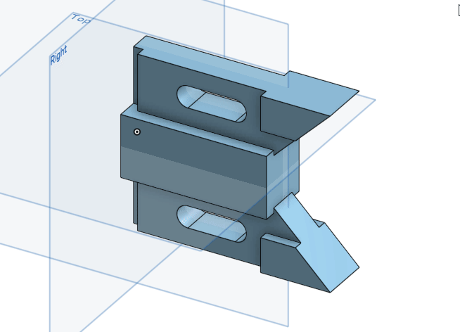

Onshape Assessment1
Q1: What’s the quickest way to learn more about each feature in the toolbar?(如何快速了解工具欄中的功能是什麼?)
A1: Hover the mouse over it for a second, and a description of the feature will pop up.(將滑鼠停留在功能上一秒，將會顯示出該功能的說明。)

Q2:Briefly describe the four foundational features. (簡要描述四個基本特徵)Feel free to draw pictures if it helps(隨意繪製圖片加以說明):
A2:
a. Extrude(擠出): This geometry is created when a constant cross section is extruded in a
straight direction(沿直線方向擠出草圖截面)
b. Revolve(旋轉): This geometry is created when a constant cross-section is revolved
around an axis of revolution(將草圖截面繞著軸旋轉出實體)

c. Sweep(掃掠): This geometry is created when a constant cross-section is swept along a
path(沿路徑掃掠草圖截面時，會創建幾何路徑)
d. Loft(斷面混成): This geometry is created when multiple cross sections are smoothly
connected together(多個截面斷面混成時會形成平滑接合的實體)
Q3: What is the default geometry in a Part Studio?(Part Studio中的默認幾何體是什麼？)
A3:The origin and three orthogonal planes: Top, Front, Right.(原點和三個正交平面：上視圖，前視圖，右側視圖。)
Q4: What’s the difference between a box select from Left-to-Right and a box select from Right-to-Left?(滑鼠從左到右框選和從右到左框選之間的區別是什麼)
A4: L-R = selects everything within the box,(由左至右=框選框內的所有內容)

R-L = selects everything the box touches(由右至左=框選所碰到的所有內容).
Q5: Can a document in Onshape have multiple Part Studios?(Onshape中的文檔可以有多個Part Studios嗎？)
A5: Yes.
Week4 << Previous Next >> OnShape Week1 Homework